0
大OS 是什麼
入門大OS（Quotation v3）是聚陽的成衣開發報價系統。它把一張報價單拆成三個階層來管理， 從 TP/FP 匯入、BOM 建檔、成本回收，到目標 FOB 試算、Recap 與客製表單匯出，整條報價作業都在同一個系統裡完成。
這本 BIBLE 怎麼用？左側目錄點章節即可跳轉；上方搜尋框可快速找關鍵字（如「FOB」「Merge」「TP」）。每個章節都附上系統實際畫面，照著圖上箭頭操作即可。
三階層Group → Dev Style → Option
核心動作建款 → BOM → 成本 → FOB → Recap
輔助查詢Notion 攻略 + 本 BIBLE
1
快速上手：先學這幾招
新手必看第一次用大OS？先記下面這幾招就能動起來。其他看不懂的功能先跳過，等實際操作到再回頭查後面的「畫面功能」章節即可，不用一開始就全部背。
🖱️ 右鍵就能複製，不用重 key
在 Dev. Style 或 Option 上按滑鼠右鍵：Copy Option as New＝複製一筆 Option；All Options＝連同整個款號的所有 Option 一起複製。→ 詳見「複製 Dev. Style/Option」章
⌨️ 算 FOB 一定要按 Enter
輸入訂單 Qty / IE 後，按鍵盤 Enter 才會 Calculate；沒按數字不會更新。🔒 報好的價想鎖住
把 Option 設成 Close，可保留當下成本，下次開 Group 不會被重算掉。👀 先預覽、要改再開
只想看用預覽模式；要編輯時只勾選需要的 Option 再開 Group，比較快，也避免卡權限（一個 Group 一次只允許一人編輯）。三層觀念先有個底：Group（報價群組）→ Dev Style（款號）→ Option（選配/成本算在這層）。看不懂沒關係，下一章有圖。
2
安裝大OS
設定- 安裝連結：
http://nt-net2/quotationv3/new%20os.application - 或直接使用桌面的「小房子」圖示登入。
建議把大OS釘選到工作列，之後開啟更方便。
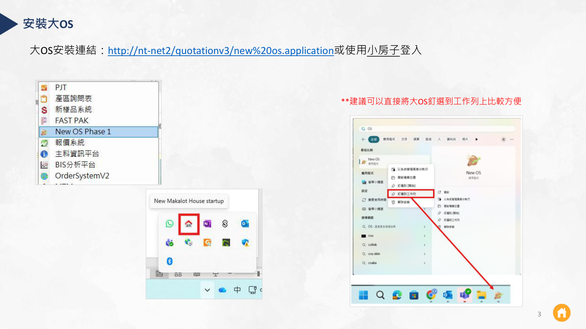
3
使用攻略 Notion
查詢公司提供 Notion 讓大家查詢大OS 的問題，提過的疑難雜症都會逐步更新上去。
- <大OS使用攻略>：使用大OS 會遇到的問題，多半能在這頁找到答案。
- <Notion使用說明>：教你如何用 Notion 查詢大OS 的疑問。
本 BIBLE 內凡標示 🔗 的項目，原手冊都對應一篇 Notion 詳解，遇到細節請回查 Notion。
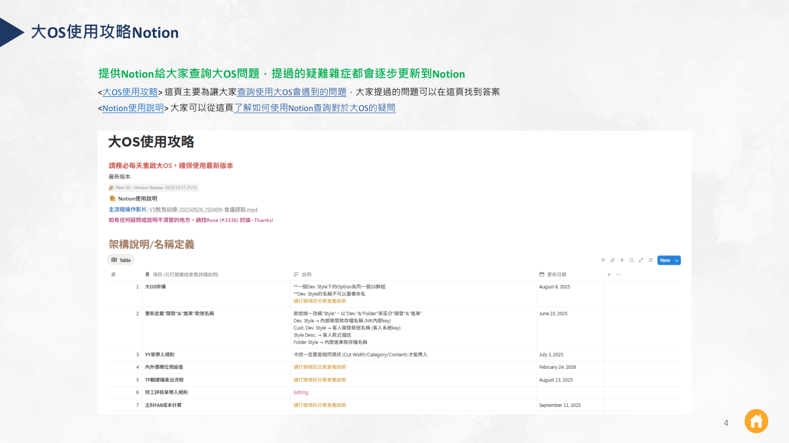
4
設計結構：三階層
核心觀念大OS 的資料結構由上而下分三層，理解這三層是看懂整個系統的關鍵：
Group報價群組
一張報價單的整體條件：季節、客戶/品牌 的基本設定。最上層的容器。
Dev Style開發款號
款號、款式描述（如 Woven Golf Romper）、Gender / Product Item。一個 Group 下可有多個款號。
Option選配項目
同一款號下的不同配置：布料/印花、IE 做工、配件、特工。報價成本實際算在這一層。
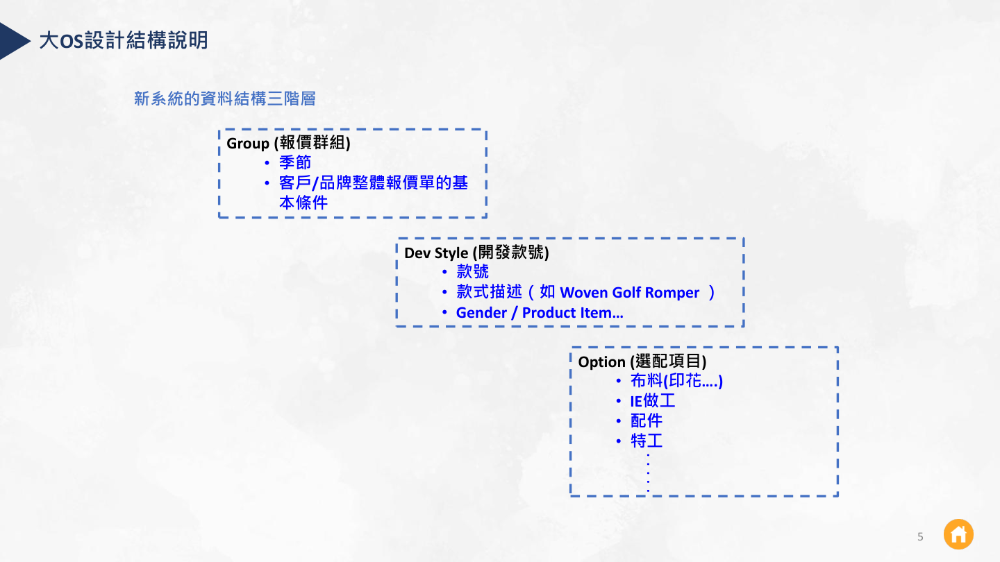
5
報價基本操作流程
流程一筆報價從建款到產出表單，標準走六大步驟：
- 建立 Style：TP/FP 匯入 or 自行建立 → Dev. Style Info 存檔（Program、Product Item、Gender、W/K、幾套幾件…）
- BOM Info 調整確認 → Option Info 編輯（布種、成分、幅寬、布重、縮率、特工 Mapping…）
- SS 群組開單 → IE、YY、SP、3D、樣品、估線、長度副料
- 成本輸入＋ IE/(SMV)/YY/SP 回收 → 主副料/特工價、CM、PFT、MISC…
- 目標 FOB 輸入 / 檢視 Costing BD ＋ 成本調整 → Option Remark、Qty
- Order Recap 匯出整理 → 報價水位檢視 → 客製表單匯出（CBD 等）For 發落開單
CF 款式可直接從舊報價轉入使用（見最後一章）。
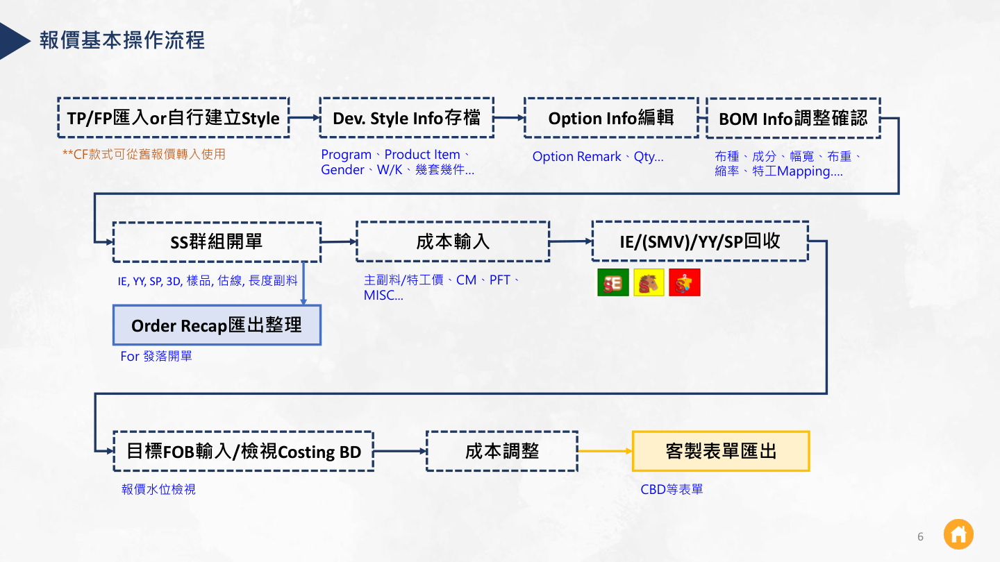
6
畫面功能 — Group Level (1/3)
畫面- 建立新的 Group。
- 設定 Group 產區比例。
- 只打開需要編輯的 Option，提升編輯效率：1. 勾選 Option → 2. 開啟 Group。
- 預覽模式可快速瀏覽。
一個 Group 同時只允許一位 User 編輯，避免互相覆蓋。
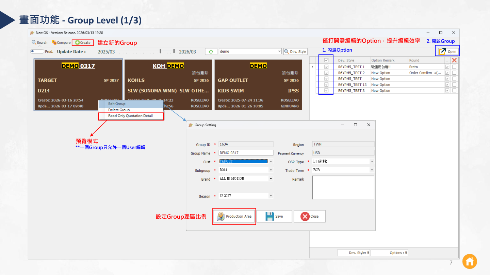
7
畫面功能 — Group Level (2/3)
畫面Group 上方工具列的匯入/建立功能：
- 🔗 抓取舊 Option 資料匯入
- 🔗 Recap Excel 匯入 🔗 FastPak 匯入
- 自行建立 Style TP 匯入
- 退出 Group 全部 Option 存檔
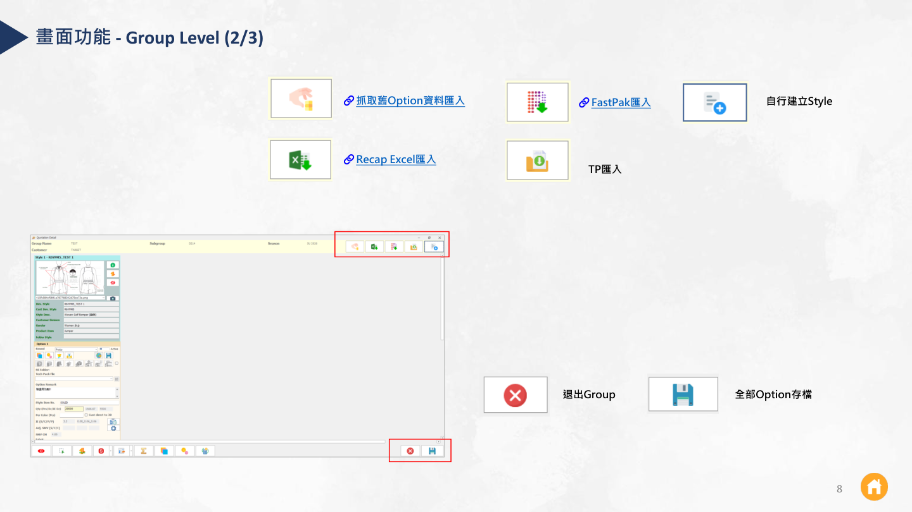
8
畫面功能 — Group Level (3/3)
畫面- 隱藏 / 取消隱藏 Option、🔗 全選 / 取消全選、🔗 Style 排序
- Order Recap 匯出、Qsheet 匯出
- 🔗 主副料批次調整資訊成本、🔗 Quotation Summary、客製表單匯出
- 全部 Option 重新計算（僅重新計算 Active 狀態的 Option）
批次作業（匯出表單選項內）：YY 單、IE 單、3D 單批次作業；開 SS 單批次作業（尚在測試中，正式上線再另行通知）。
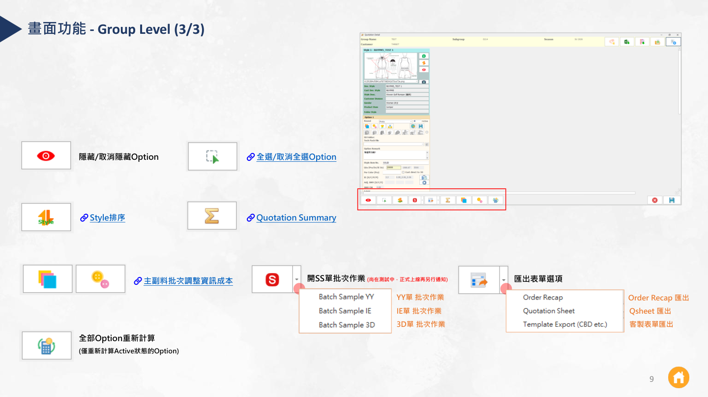
9
畫面功能 — Dev. Style Level
畫面款號（Dev. Style）層級可操作：
- Option 更改排序
- Design 資訊設定
- 隱藏
- 貼上圖片 / 上傳圖片（款式圖）
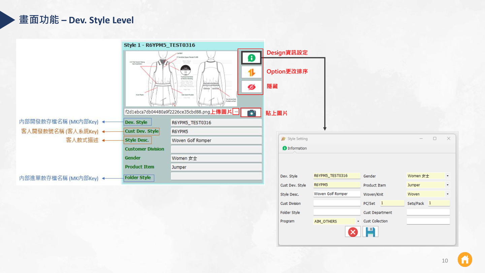
10
畫面功能 — Option Level (1/2)
畫面Option 是真正建 BOM、算成本的地方。重點功能：
- 檢視目前 TP 資料、Option 備註（會顯示在 Group 預覽）
- BOM Summary、IE 單搜尋帶入、IE / SMV 設定
- 主料 FAB / 副料 ACC / 特工 SP：編輯 BOM 資訊 & 內外價成本（🔗 副料/特工 BOM&成本畫面、🔗 ACC 副料表匯出匯入）
- SS 文件庫 / SS 群組 / IE 單 / YY 估碼單 / SP 特工單 / 3D 單 / 樣品單 / 估線單 / 長度副料單 🔗 SS 開單作業、🔗 SS 狀態顏色說明
- Order Confirm / Upload to OS：進單確認 & 上傳 Option 資料（🔗 進單作業說明）
- Save Option：Option 存檔
FAB（主料）格式Cust. FAB ID, FAB Category, FAB Content (Knit/Woven), Full / Cut Width, Weight-BW-UOM, Iron Shrinkage, Supplier, <Internal Cost> $Unit Price/UOM, YY/Pc
ACC（副料）格式Accessory Name, Acc Desc, <Internal Cost> Cost$/Pc
SP（特工）格式Special Process (MK), <Internal Cost> Cost$/Pc
Close / Active：把 Option 設為 Close 可保留當下報價成本，避免下次開啟 Group 時成本變動。
切換 Close/Active 時，成本都會依當下公司成本設定重新計算後再存檔（🔗 Close/Active Option 鎖住報價成本說明）。報價階段註記可留空。
切換 Close/Active 時，成本都會依當下公司成本設定重新計算後再存檔（🔗 Close/Active Option 鎖住報價成本說明）。報價階段註記可留空。
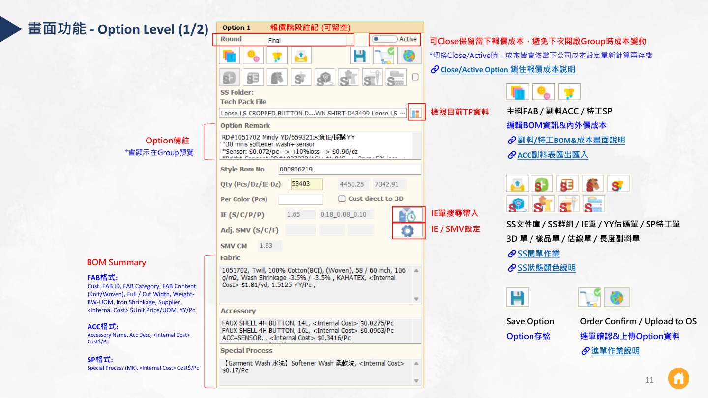
11
畫面功能 — Option Level (2/2)
畫面Option 層的目標 FOB 與獲利試算：
- 目標 FOB 計算獲利。
- 帶入產品 HS Code 稅率、對等關稅。
- [目前為 GAP Inc 專用] 客人提供的到岸係數；如有 LF，ELC 會以 LF 計算。
- Planned Area 設定 & 查看產區成本細項。
- 內外價差異比較。
計算前提：必須先輸入訂單 Qty / IE 才能計算；輸入完按鍵盤 Enter 即 Calculate。
運費需自行輸入，如客人有提供公式可協助設定。
紅字提示：特工有產區、但無標準價。
運費需自行輸入，如客人有提供公式可協助設定。
紅字提示：特工有產區、但無標準價。
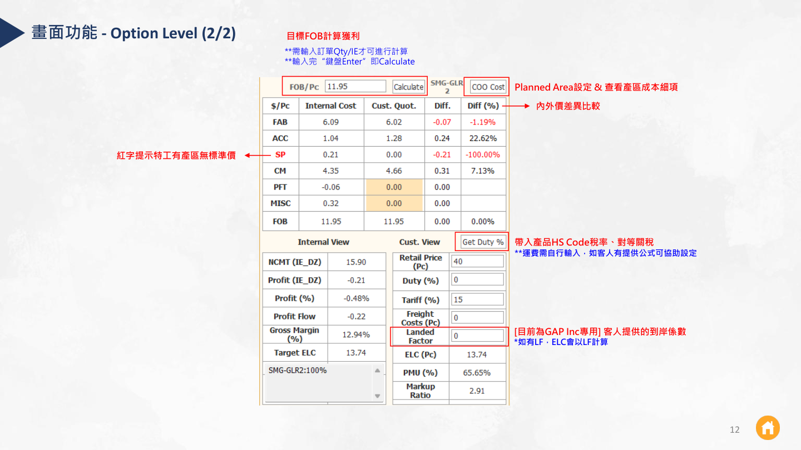
12
複製 Dev. Style / Option
技巧用滑鼠右鍵就能快速複製，依點擊位置不同有不同選項：
在 Dev. Style 區域按右鍵
- Empty Option ⇒ 只複製 Dev. Style 資訊，給一個空白 Option。
- All Options ⇒ 複製 Dev. Style 資訊，並複製該款號的所有 Option。
＝另存一筆新的 Dev. Style
在 Option 區域按右鍵
- Add Empty Option ⇒ 新增一個空白 Option。
- Copy Option as New ⇒ 將該 Option 內容複製到新的 Option。
＝在 Style 下新增一筆 Option
Copy 時可以勾選要複製的內容，不必整筆全帶。
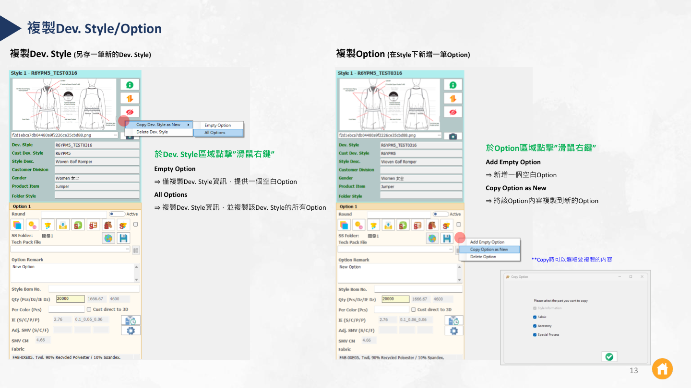
13
TP Compare（置換新 TP 比對）
功能當客人換版、發新 TP 時，用 TP Compare 比對新舊差異再決定要不要帶入：
- 點 「…」 上傳 New TP 進行 Compare。
- 一筆 TP 若有兩個以上 BOM，可由該欄選取。
- 按 Tab 可切換 Compare 帶入的項目。
左：目前 Option 資料可能已被修改過
中：新上傳的 TP本次要比對的新內容
右：舊 TP 內容目前 Option 留存的原 TP
詳細說明與留意事項請見 🔗 Notion：TP Compare（置換新 TP 比對功能）。
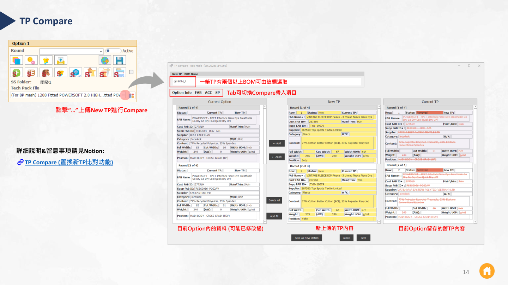
14
Merge Options（合併選項）
功能 · 影片一句話：把同一款號下的多個 Option 合併成「一個新的 Option」，數量自動加總，方便把多色/多版彙整成一條報價。
操作步驟（取自教學影片）：
- 勾選要合併的多個 Option（每個 Option 卡片右上角的勾選框）。
- 點下方工具列的 「Merge Options」 按鈕。
- 系統在目前 master 款號下新增一個合併後的新 Option：Remark 顯示
Merge，Qty 為各選項加總。 - 跳出提示 「Merge completed successfully. A new option has been added under the current master (not saved yet)」 → 記得存檔。
- 存檔成功顯示 「Single Option Save Success」，合併完成。
範例：影片中合併 Option 1+2+3，數量
7130 + 6830 + 15218 = 29178 自動加總到新的 Option 4。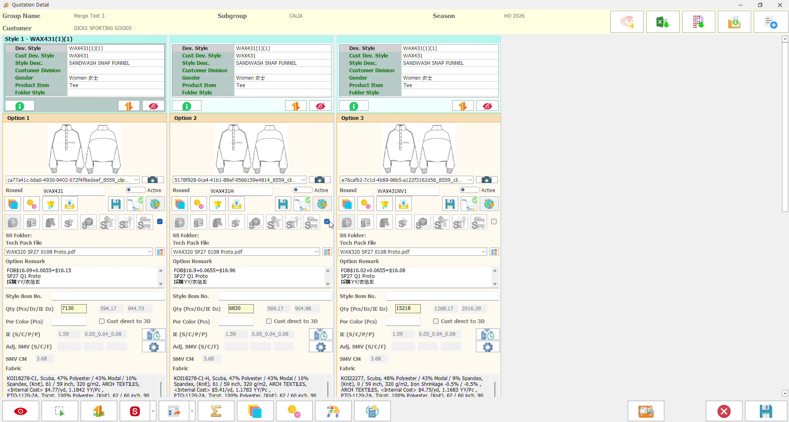
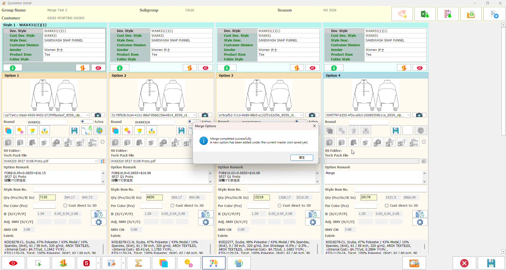
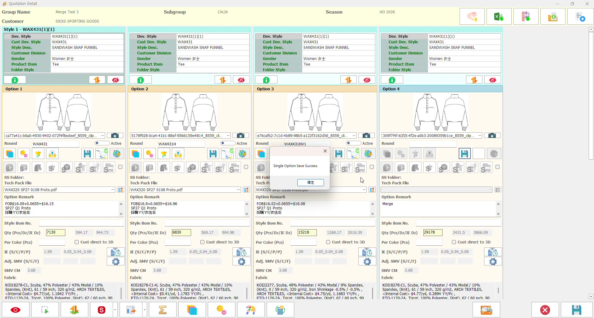
15
舊報價轉入大OS
轉檔既有的舊報價 QS 資料可批次轉入大OS：
- 點選 「Batch BigOS」。
- 全選 or 單選欲轉入大OS 的 Option。
- 點選 「Add to BigOS」 即匯入。
詳細說明與留意事項請見 🔗 Notion：如何把舊報價 QS 資料轉到大OS？
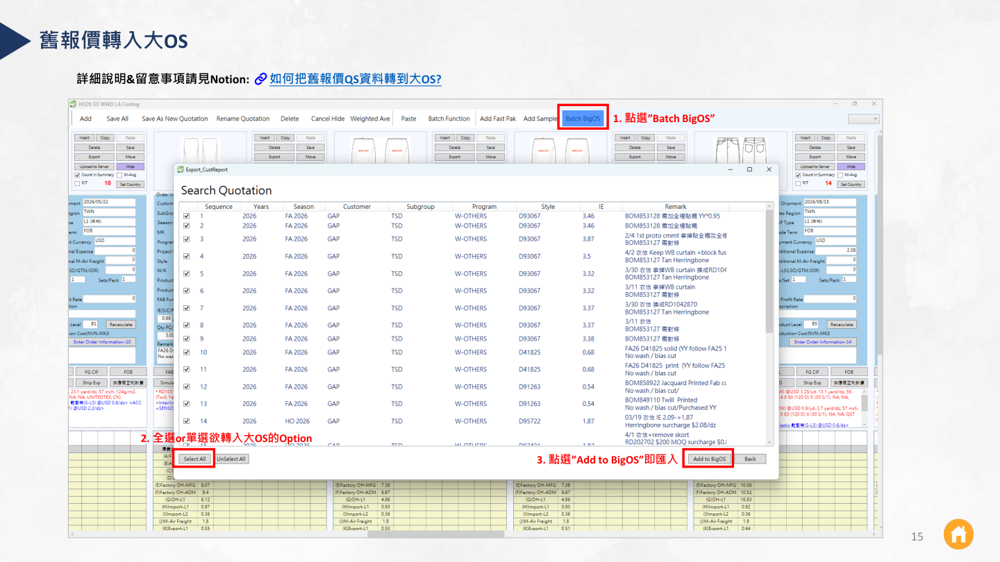
16
目前使用系統遇到的痛點
痛點 · 持續補充下面已列目前同事回報的痛點。你可以直接在下方表單新增自己的痛點 → 填好欄位按「＋ 新增」即可。新增的內容會存在這台電腦的瀏覽器裡（重開頁面仍在）。要彙整給大家時，按「📋 複製全部」貼回給負責人即可。
| 痛點 / 問題 | 造成的影響 | 暫時做法 / 改善建議 | 狀態 | 操作 |
|---|---|---|---|---|
| 系統速度非常慢 | 操作常要等待、需排隊，作業不順、拉長報價時間 | （待補：避開尖峰時段／反映系統端優化） | 待跟進 | 內建 |
| 需人工 key in 的資料仍多 例：副料需一項一項輸入 | 建檔耗時、容易拖慢整體報價作業 | 建議副料能「單一項 / 批次帶入」，不必逐筆 key，作業會快很多 改善建議 | 待跟進 | 內建 |